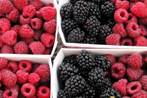

Fruit Salad
This fruit salad combines chopped peaches, strawberries, bananas, and red and green grapes, dressed with a simple fresh lime and pineapple juice dressing.
Ingredients
6 peaches, peeled, pitted, and chopped
1 pound strawberries, rinsed, hulled, and sliced
1/2 pound seedless green grapes
1/2 pound seedless red grapes
3 bananas, peeled and sliced
1/2 cup granulated sugar, or less, to taste
Dressing
Juice of one lime
1/2 cup pineapple juice
1 teaspoon ground ginger
Preparation:
Combine chopped and sliced fruits in a large serving bowl; toss gently. Sprinkle with sugar. Whisk together remaining ingredients in a small bowl or 1 cup measure. Pour dressing mixture over fruit and toss gently to combine. Cover and chill the fruit salad thoroughly before serving.
This fruit salad recipe makes enough to serve about 10 to 12 people.
Printer Friendly Version

Delicious Recipes
Listed below are links to five fantastic recipies which you can download or print off, and then use at home to make some great, homely food.
Nordic Chicken, with Rhubarb
Chicken and Tomato Soup
Fruit Salad
Pancakes
Fruit Smoothie
© Daniel Ingram, 2011 ~ Site Map
All content within is provided for general information only, and should not be treated as a substitute for the medical advice of your own doctor or any other health care professional. We are not responsible or liable for any diagnosis made by a user based on the content of this website. We are not liable for the contents of any external internet sites listed, nor does it endorse any commercial product or service mentioned or advised on any of the sites. See our Links Policy for more information. Always consult your own GP if you're in any way concerned about your health.